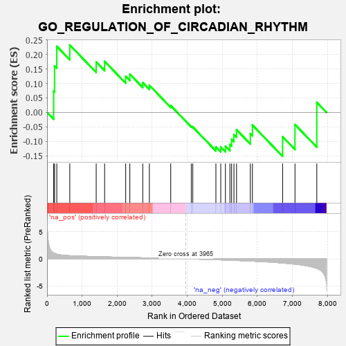
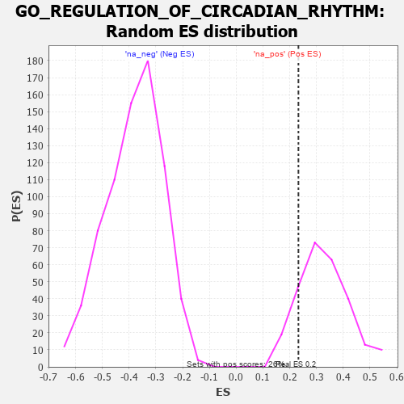

| | | Dataset | 7d |
| Phenotype | NoPhenotypeAvailable |
| Upregulated in class | na_pos |
| GeneSet | GO_REGULATION_OF_CIRCADIAN_RHYTHM |
| Enrichment Score (ES) | 0.23251875 |
| Normalized Enrichment Score (NES) | 0.7115496 |
| Nominal p-value | 0.8490566 |
| FDR q-value | 0.9518221 |
| FWER p-Value | 1.0 |
Table: GSEA Results Summary

Fig 1: Enrichment plot: GO_REGULATION_OF_CIRCADIAN_RHYTHM
Profile of the Running ES Score & Positions of GeneSet Members on the Rank Ordered List
| PROBE | GENE SYMBOL | GENE_TITLE | RANK IN GENE LIST | RANK METRIC SCORE | RUNNING ES | CORE ENRICHMENT | | 1 | RORB | | | 189 | 1.097 | 0.0732 | Yes |
| 2 | SPSB4 | | | 214 | 1.019 | 0.1602 | Yes |
| 3 | SOX14 | | | 278 | 0.859 | 0.2281 | Yes |
| 4 | RBM4 | | | 649 | 0.576 | 0.2325 | Yes |
| 5 | NOCT | | | 1402 | 0.409 | 0.1740 | No |
| 6 | DDB1 | | | 1642 | 0.366 | 0.1763 | No |
| 7 | CREB1 | | | 2243 | 0.269 | 0.1246 | No |
| 8 | SIN3A | | | 2361 | 0.251 | 0.1320 | No |
| 9 | RORA | | | 2730 | 0.193 | 0.1028 | No |
| 10 | RBM4B | | | 2918 | 0.163 | 0.0937 | No |
| 11 | HDAC3 | | | 3528 | 0.072 | 0.0234 | No |
| 12 | MTOR | | | 4114 | -0.025 | -0.0480 | No |
| 13 | HNF4A | | | 4157 | -0.034 | -0.0503 | No |
| 14 | FBXW7 | | | 4816 | -0.161 | -0.1188 | No |
| 15 | PRKDC | | | 4955 | -0.189 | -0.1194 | No |
| 16 | DRD2 | | | 5088 | -0.221 | -0.1165 | No |
| 17 | TOP2A | | | 5216 | -0.250 | -0.1104 | No |
| 18 | CDK1 | | | 5264 | -0.262 | -0.0932 | No |
| 19 | NPY2R | | | 5331 | -0.281 | -0.0767 | No |
| 20 | ATOH7 | | | 5405 | -0.296 | -0.0597 | No |
| 21 | ADA | | | 5798 | -0.405 | -0.0733 | No |
| 22 | ATG7 | | | 5858 | -0.420 | -0.0435 | No |
| 23 | GSK3B | | | 6719 | -0.768 | -0.0839 | No |
| 24 | OPN4 | | | 7072 | -0.978 | -0.0418 | No |
| 25 | ADCY1 | | | 7695 | -1.752 | 0.0347 | No |
Table: GSEA details [plain text format]

Fig 2: GO_REGULATION_OF_CIRCADIAN_RHYTHM: Random ES distribution
Gene set null distribution of ES for GO_REGULATION_OF_CIRCADIAN_RHYTHM